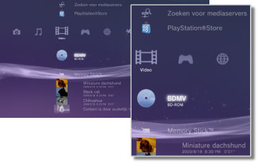

Video > Categorie Video
Categorie Video
De volgende pictogrammen worden getoond onder  (Video). De pictogrammen die worden weergeven, zijn afhankelijk van de gebruikscondities.
(Video). De pictogrammen die worden weergeven, zijn afhankelijk van de gebruikscondities.

 |
BD-Data hulpprogramma | Administratieve gegevens gebruikt door Blu-ray Discs (BD's) worden opgeslagen. |
|---|---|---|
 |
Zoeken voor mediaservers | Zoeken naar DLNA-mediaservers die aangesloten zijn op hetzelfde netwerk. |
 |
Mediaserver | Verbinding maken met DLNA-mediaservers en de opgeslagen videobestanden afspelen. Het weergegeven pictogram varieert naargelang het type server. |
 |
PlayStation®Store | Informatie van PlayStation®Store bekijken. Dit pictogram wordt alleen weergegeven in landen en regio's waar de videowinkel van PlayStation®Store beschikbaar is. |
 |
BD-ROM/BD-R/BD-RE | Een Blu-ray Disc (BD) afspelen. |
 |
DVD-ROM / DVD-R / DVD+R / DVD-RW / DVD+RW | Een DVD of een AVCHD-disc afspelen. |
 |
Datadisc | Videobestanden afspelen die zijn opgeslagen op compatibele, beschrijfbare discmedia zoals een CD-R of DVD-R. |
 |
Memory Stick™ | Videobestanden afspelen die zijn opgeslagen op Memory Stick™-media.* |
 |
SD Memory Card | Videobestanden afspelen die zijn opgeslagen op een SD Memory Card.* |
 |
CompactFlash® | Videobestanden afspelen die zijn opgeslagen op CompactFlash®.* |
 |
PSP™ (PlayStation®Portable) | Videobestanden afspelen die opgeslagen zijn op een Memory Stick™-medium van een PSP™-systeem. |
 |
PSP™ (PlayStation®Portable) | Videobestanden afspelen die opgeslagen zijn in de systeemopslag van het PSP™go-systeem. |
 |
Digitale camera | Videobestanden weergeven die op een digitale camera zijn opgeslagen die compatibel is met het PS3™-systeem. |
 |
WALKMAN®/ATRAC Audio Device (WALKMAN®) | videobestanden afspelen die op een WALKMAN®/ATRAC Audio Device (WALKMAN®) zijn opgeslagen. |
 |
ATRAC Audio Device | videobestanden afspelen die op een ATRAC Audio Device zijn opgeslagen. |
 |
USB-apparaat | Videobestanden afspelen die zijn opgeslagen op een USB-apparaat voor massaopslag. |
 |
Films uit digitale camera | Videobestanden afspelen die in de DCIM-map van het opslagmedium zijn opgeslagen. |
|
(map) | Dit pictogram wordt weergegeven voor mappen die werden aangemaakt op opslagmedia met behulp van een pc. |
 |
(bestanden opgeslagen op de vaste schijf) | Videobestanden afspelen die op de vaste schijf van het PS3™-systeem zijn opgeslagen. Miniatuurafbeeldingen worden weergegeven. |
 |
(data gedownload op de vaste schijf) | Dit pictogram wordt weergegeven voor videobestanden die op de vaste schijf zijn gedownload. Bij het starten wordt de data geïnstalleerd en kan het videobestand worden afgespeeld. |
| * |
Een geschikte USB-adapter (niet bijgeleverd) is vereist om opslagmedia met bepaalde modellen te gebruiken. In combinatie met een USB-adapter worden opslagmedia weergegeven als |
|---|
 (USB-apparaat).
(USB-apparaat).Opmerkingen
- Meer informatie over DLNA vindt u in deze handleiding onder
 (Instellingen) >
(Instellingen) >  (Netwerkinstellingen) > [Mediaserver verbinding].
(Netwerkinstellingen) > [Mediaserver verbinding]. - Als het systeem Blu-ray Discs met auteursrechtbescherming dient af te spelen aan een resolutie van 1080p, moet het systeem worden aangesloten op een apparaat dat compatibel is met de HDCP-standaard (High-bandwidth Digital Content Protection) met behulp van een HDMI-kabel.
- Miniatuurafbeeldingen worden mogelijk niet weergegeven voor bepaalde soorten videobestanden met auteursrechtbescherming.
- Bij het afspelen van een BD die inhoud met ouderlijk toezicht bevat, is de weergave beperkt volgens de instellingen van ouderlijk toezicht van het PS3™-systeem. Het niveau van ouderlijk toezicht voor de BD kan worden aangepast onder (Instellingen) >
 (Beveiligingsinstellingen).
(Beveiligingsinstellingen). - Bij het afspelen van een DVD die inhoud bevat met ouderlijk toezicht is mogelijk een wachtwoord vereist om inhoud af te spelen. Het wachtwoord kan worden aangepast onder (Instellingen) > (Beveiligingsinstellingen).
- Inhoud met beperkingen voor ouderlijk toezicht wordt weergegeven als
 . U kunt zulke inhoud afspelen door een viercijferig wachtwoord in te voeren. Het wachtwoord kan worden ingesteld of gewijzigd onder (Instellingen) > (Beveiligingsinstellingen).
. U kunt zulke inhoud afspelen door een viercijferig wachtwoord in te voeren. Het wachtwoord kan worden ingesteld of gewijzigd onder (Instellingen) > (Beveiligingsinstellingen). - Geblokkeerde BD's worden weergegeven als
 . Om inhoud van dergelijke schijven af te spelen, moet u het wachtwoord invoeren dat door de discontwikkelaar werd ingesteld.
. Om inhoud van dergelijke schijven af te spelen, moet u het wachtwoord invoeren dat door de discontwikkelaar werd ingesteld. - Gehuurde content die gedownload wordt van de Video Store of PlayStation®Store wordt weergegeven als
 .
. - In zeldzame gevallen werken schijven en andere media mogelijk niet correct als ze op het PS3™-systeem worden afgespeeld. Dit is vooral te wijten aan variaties in het fabricatieproces of de codering van de software.
- Als een apparaat dat niet compatibel is met de HDCP-standaard (High-bandwidth Digital Content Protection) op het systeem is aangesloten met behulp van een HDMI-kabel, kan video en/of audio niet via het systeem worden uitgevoerd.
Blu-ray Disc (BD) lokale opslag
Als er tijdens weergave van een BD, een foutbericht wordt weergegeven, dat aangeeft dat de lokale opslagruimte onvoldoende is. Dient u overbodige bestanden op de harde schijf te verwijderen om de vrije schijfruimte te vergroten.
Lokale opslag is een gebied voor gegevensopslag dat wordt gedefinieerd in de standaards voor BD-ROM profiel 1.1 / 2.0. Deze gegevens worden opgeslagen op de harde schijf van het PS3™-systeem.